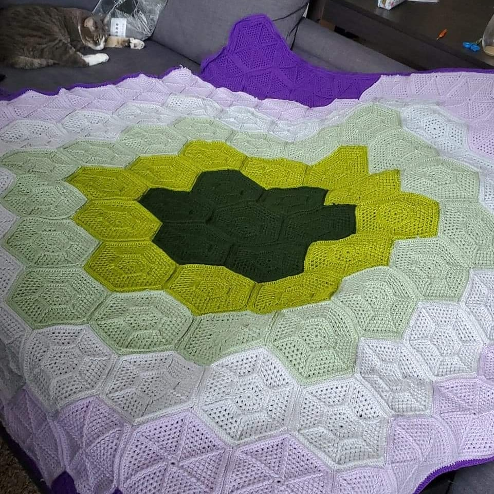

Welcome
Hello everyone, and welcome my page. I am very excited to share most of my personal projects. Most of those posted are going to be tech-related. Anything else will most likely be crochet, and therefore all the way down at the bottom.
I have created this website mostly to test out my new knowledge and skills working with HTML and CSS. But it is also a way to keep myself accountable for my current and ongoing projects. I am hoping that posting about them here helps draw inspiration to either continue forward to change paths depending on what I am working on.
I do plan on the layout and content of this webite to be ever-changing. Hopefully that means my skills are growing and evolving. Thank you for visiting!
Work History
Publix | Jan 2015 - Jul 2019
Deli Clerk
Responsibilities mainly included customer service, food preparation, food health and safety, and organization and rotation of stock
Starbucks | Jul 2019 - Aug 2020
Barista
Resposibilities included customer service, food preparation, food health and safety, cash management, and inventory management
Blind Tiger | April 2021 - Dec 2021
Kitchen Staff
Resposibilities mostly involved customer service, food preparation, food health and safety, cash management, inventory management, and maintenance and cleaning of workspace and equipment
Education
University of Phoenix | Jul 2024
Bachelor of Science in Information Technology
Certification
CompTIA A+ Certified
Valid Feb/26/2025 - Feb/26/2028
Skills
Technical Skills
Windows OS: there has been a Windows computer in my household since 1999. I have personal experience using Windows for approximately 25 years.
Mac OS: I have a fundamental level of knowledge about Mac OS, again in a personal experience, as well as iPad OS and iOS.
Linux: I have a very limited knowledge of Linux; mostly in relation to school labs and projects. It is something I am very interested in to further my experience with.
Mobile devices: I personally have an Android device and therefore find myself to say I have a much better grasp of that OS than I would say I have for iOS, but I would still say I am confident in my knowledge and abilities to be able to troubleshoot any mobile device.
3-D Printers: I have had the privilege to be able to build a 3-D printer from scratch. The Prusa Mk4 model took about a week to fully assemble. I did most of the hands-on building while my partner did the research and reading and relaying of instructions.
PC Building: I have also been able to help build 3 separate PCs from the ground up. It was a very daunting task the first time and has only gotten easier and more fun each successive time.
Programming Languages: I have a very top-level knowledge and experience with Python. I am very recently getting into HTML and CSS and am thoroughly enjoying it, too.
Soft Skills
Organization, problem solving, collaboration, critical thinking, communication, and initiative
Projects
3D Printing
Prusa Mk4 Printer
Building
Building a 3-D printer from the ground up was both fun and terrifying. There were so many pieces, 90% of them being the tiniest, slipperiest screws on the planet. The instructions were so detailed and stuffed full of reference photos. The job is so precise that the manufacturer also included a code for a step-by-step video guide. It was a very meticulous and fulfilling endeavor. I find I really enjoyed the process, and of course the outcome. Between my partner and I, I am usually the more hands-on person. I tend to do a lot of the building of furniture- and now printers. I did the bulk of the building, and I know his fingers were thanking him at the end of the process, mine were crying. The part that almost demolished all of my patience was not calibrating the motors or trying to figure out the crazy diagram for cable management, but trying to put the cover over the motors’ cables themselves. That was such a tedious task, and to think I had to do it three times. I almost gave up. But I knew at the end of it all, we would end up with something well worth it. And one week later, we had a completed 3-D printer, tons of items on our combined wishlists to print, and no filament. We had to wait an entire 12 hours before being able to christen the machine (aside from the bit of filament provided to be able to test the print head and motors etc.). It has been several months now and the thing still runs perfectly. No need for maintenance yet, thankfully.
Prints

Learning how to use the slicing software for 3-D models is quite challenging and something I should probably put much more thought and research into. Sadly, I tend to use a trial-and-error approach, and thankfully it has not been catastrophic. My first foray into printed models was this great big pirate ship I found on Etsy. The original is absolutely massive. After putting the first piece (of approximately 30) into the slicer software I realized I would have nowhere to display something that large. I fiddled around for a bit and settled on printing it at 75% the size of the model.
It took about three weeks and almost two full reels of filament to complete. Some of the pieces took absolute ages to print. But that was a price I was more than willing to pay, because the amount of detail in the model is exquisite. I accidentally broke several microscopic decorations off in the process of either pulling the print off the print-bed or while gluing the whole mess together. During the whole operation, I became well-aquainted with the Prusa slicer software, the printer, PLA filament, and superglue. I have never been so unbothered by having superglue stuck to the ends of my fingers before, and it was a constant for about a week.
Another trial was the temperature. The filament reels have the ideal print temperatures on their packaging, but it all depends on any number of factors. You have to consider what your printer is capable of, the detailing of the print, the material you are using, and you might as well take into account the positioning of the moon. That is mostly a jest, but in all honesty, you can dedicate your printer to churning out articulated dragons exclusively, and they will come out identical for the most part, until it doesn't for reasons unknown, or you can slap something into the slicer software, throw it into the print queue, and see what happens and the result be perfect despite not putting any thought into the settings. Through my little experience, I have noticed that a good quality printer can potentially make up for a great deal of sins when it comes to the print model, whereas a filament that has been compromised in some way will absolutely wreak havoc on your efforts.
All this to say, 3-D printing turned out to be more difficult than I initially thought it would be, and I am having a grand ol’ time. Going forward, I plan to get more knowledgeable about the Prusa Slicer software. There are so many settings and it feels like each setting has sub-settings. So much to mess about with, and so much to learn. Wish me luck in all my future endeavors!
MTG Table
 I made an insanely fun Blue/White Detectives deck when this set released.
I made an insanely fun Blue/White Detectives deck when this set released.
The first project I started after finishing my degree was a catalog for all of my partner’s Magic: The Gathering cards. It was a massive undertaking. First, I had to organize what has to be approximately four thousand cards, then I manually entered each into a table. I learned about SQL in school, of course, but only enough to grasp the basics, therefore I decided to use a SQL database that had a user interface; I went with DB Browser. I am still relatively new to using command line interfaces, and I did not want to jeopardize the whole project with some incorrectly entered SQL commands. Also, can you imagine creating 3,000+ unique entries in a CLI? That sounds horrible. I was very grateful to find DB Browser.
Physically sorting the cards took roughly a week, give or take. The original organization system was ‘put cards in box’. I am grossly overstating it. There was some structure to how stacks and desks of cards were arranged together, but after four separate moves,things got a bit chaotic. I finally caved into the pressure to give the game a try, and next thing I knew, we were buying a lot more cards to play with, meaning the existing ones needed to come out of storage. The floodgates were open. My partner floated the idea of having a digital catalog and it became my project. It probably sounds very dull to most people, but I actually like doing work like that. I know everyone puts ‘organization’ as one of their soft skills on their resume, and I know I am not an organization savant, but I really do think I am fairly good at it. And I enjoy it, which has to count for something.
After the physical sorting, I created a database in DB Browser. I was initially using a Raspberry Pi for storage. Setting that up was a nice little side project I should put more time aside for. Creating the database itself was kind of like round two of card organization. I found I also have an appreciation for data entry. Now that was a long process. I think this portion of the project took at least two weeks. It did not help that we kept buying more cards that needed to either become their own entries or to update the total of existing ones.
Once that was all said and done, I wanted to be able to create a form to update the database whenever new cards were collected or, god forbid, some traded away or sold. I tried to teach myself some Python for this, and toyed around with a Tkinter tutorial. I enjoyed it, but I don’t think I liked it enough at the time to really put in the effort. But I think this is a project I am going to revisit. I will try to see if I can make it an online form so that the catalog can be accessed anywhere without having to SSH into the Raspberry Pi.
Html and CSS
This website is my deep dive into HTML and CSS. I took the free seven-day trial course on Codecademy and had much more fun than I thought I would. I initially set out to just try to expand on my skillset and I had seen several job listings asking for experience with web design. Despite that not really falling under the umbrella of Information Technology, I wanted to give it a try. In school I really struggled with learning to code. It did not help that my intro professor was teaching us Python and Java simultaneously. I had zero experience going into that class and trying to learn syntax for two languages and keeping those separate in my brain did not work. I needed a lot of assistance to pass that course, then gave up coding altogether for several years after that. Once I changed majors (twice) to IT, I took another coding course, but it was very beginner-friendly Python. My Python skills are still beginner-level, but it is not as fearsome as it once was.
With that little bit of experience there, I felt on steadier ground to explore other languages. Learning HTML and CSS together is not as daunting as Python and Java to me. The two are obviously meant to go hand in hand. I am finding the process challenging in a good way. I have not had to flex my thinking muscles like this in a while and it’s been freeing.
However, something I have discovered about myself is that I struggle a bit when it comes to creating something from nothing. It is easier to follow a guide or a blueprint, and at first that is what I was doing. I was following video tutorials on how to create personal websites. But I needed this to be something entirely my own. This version of my website is all my own creation. I am not using a template. I roughly sketched what I wanted the layout to look like, created the format, then took forever filling in all the personal information. I plan to post this version and then continue to improve upon it. I am hoping that in the near future I have something a little more refined, but still entirely my own.
Crochet

This is my first afghan. I have this to my grandmother
My grandmother taught me to crochet when I was ten or eleven. She had been crocheting for decades, making afghans for me and my sisters for our 16th birthdays. She taught me how to hold the yarn and hook in each hand, then how to do a long line of chain stitches and then single crochet stitches. I sat on the floor next to her chair and practiced with that ridiculously long piece of nothing for at least an hour. And since I was about ten years old, I was very bored and immediately gave it up.
Shortly before she passed, I had the strongest urge to pick it up again. I bought some random yarn and a hook in an arbitrary size and decided I was going to make myself a blanket. Nothing so fancy and elegant as the afghans she used to make. Mine was going to be two colors in alternating stripes. I watched YouTube tutorials and tried to decipher online patterns, but my spontaneous need to craft something winked out once I realized I was really bad at crochet. I know this is a very common issue, especially with people my age, where if we are not immediately great at something, we obviously failed and should never consider trying again. Thankfully, my crafting hiatus did not last nearly as long this time and I picked it back up the next year.
I started and un-started so many different blankets once I finally got the hang of crochet. I figured out the different stitches and how to count and the turning chain and all that. But, again, I always hinder myself by getting caught up in the design aspect. What color should I use? Should I use more than one? Which stitch should I use or should I use a variety? It got to the point that I was buying yarn for the ideas I had and then not making anything with it. But finally- finally!- I found a blanket pattern I liked and could follow along and got started. I ended up liking that pattern so much that I made several of them. The first went to my other grandmother, then a couple to my sisters. I fear for their structural integrity at this point, seeing as I was very poor at creating long-lasting knots, but no one has said anything yet and it's been years.
All of my first completed crochet projects were blankets. I have made so many blankets, but you can never have too many of those laying around. After probably ten blankets, I finally made the decision to try clothing. I have now made as many winter-time beanies as I have made blankets. And this is coming from a Floridian. We don’t need winter-time beanies, it’s way too hot. But they’re fun and easy to make.
Other than that I have made book travel cases, stuffed animals, purses, a set of coasters, and my yoga mat carry bag. I have gotten many compliments on the yoga bag that I have considered either creating a pattern and posting it online, or just outright selling them to other yogis.